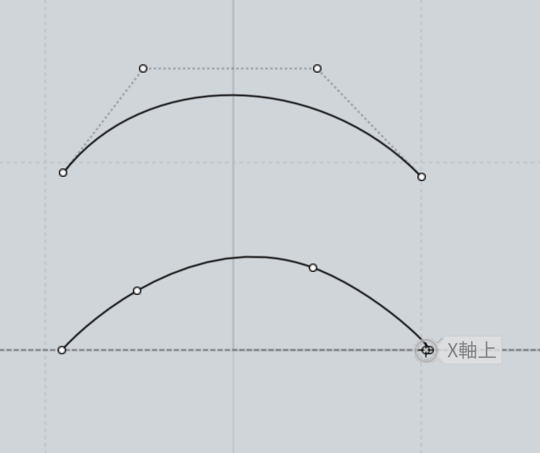

（※ 全体の2記事目になります。3記事目はこちらです。 Part1, Part2, Part3, Part4, Part5, Part6 ）
前回の記事で、「CAD for Artist」を使った制作手法の紹介と、"穴埋め" 技法を利用した、CADからスカルプトにうまくモデルを持っていく方法をご紹介しました。
今回は、なぜ サブディビジョンサーフェス (subdiv) ではなくてわざわざCAD、つまりNURBS曲線 (= Non-Uniform Rational B-Splines = 非一様有理Bスプラインの頭字語) を使うのかについて、実際に具体的な制作を行う上でのポイントを詳しく書いていきます。
最後にもう一度触れますが、以下の記事では次の表の内容を具体的にみていきます。
| subdiv | NURBS | スカルプト | |
|---|---|---|---|
| メリット | ポリゴンを直接操作できる | 曲線を実線として操作できるので直感的 | 粘土のような操作でポリゴンを意識しないで済む |
| デメリット | ポリゴンが増えると操作に難あり。しかも実線（境界面）を通らない。 | 計算不可能な場合があり、見た目と書き出し結果（ポリゴン）が異なることがある | どうしても粘土っぽくなり、薄い物体の扱いや細かなディティールの制御に難あり |
そして、CAD→スカルプトを併用した「いいとこ取り」ワークフローで、これらの課題点をどう解決できるかについては、さらに続く次の記事で詳しく解説していきます。
さて、人形などの丸っぽい、曲線的な物体をポリゴンで作っていこう、Blenderで作っていこうとすると、まず利用されるのが「サブディビジョンサーフェス (subdiv)」です。
サブディビジョンサーフェス (subdiv) を例えば立方体に適用すると、以下の画像のようになります。
黄色い四角形が元になっているポリゴンで、その中にある曲面的な滑らかな物体が、subdivを適用したあとの物体です。
subdivでは、「クリース (= 折り目)」といって、どれくらいポリゴンから滑らかな曲面を作るかを各辺に対してパラメータとして設定できます。
下の3つの画像を見比べてもらうと、クリースがどんな効果を出しているか、そして曲面がだんだんと俊敏になる（角が立つ）ことがわかるかと思います。

通常の3D制作というのは、このsubdivをうまく使って曲面を作っていくわけですが、いくつか課題点があります。
まず課題1については、前述の図をみてもおわかりかとおもいますが、各点は通過点ではなく制御点でしかないということです。以下に比較の図を挙げてみます。

点が小さくて少し見づらいですが、上が制御点、下が通過点です。CADの場合に使うNURBS曲線も結局は最終的に制御点で操作するわけですが、面は必ず実線を通過するというのがsubdivとは大きく異なります。
この何が問題かというと、例えば参考画像をなぞって実線にして、それを元に立体を作りたい、というときに問題になってきます。（どうしても少し内側に曲面ができてしまう。）
そして、前述の制御点の数を増やせばわかりますが、最初は4点くらいで制御できていたものが、点が増えていくとだんだん制御がむずかしくなっていきます。
ちなみにこれを解決するのがいわばスカルプトで、Blenderにスカルプトが搭載された理由はこれが大きいと感じています。スカルプトツールは元々粘土のような高解像度なポリゴンを扱う技術なわけですから、点が多い場合にうまく制御するノウハウがスカルプトには詰まっているというわけです。
これはとても大事なポイントなので、後ほどまたご紹介します。
話をもとに戻すと、ポリゴンモデリングではだんだんと制御点が増えていくにもかかわらず、それに比例してsubdivがどんどん扱いづらくなるという矛盾を抱えてしまうのです。
前述の課題2である、ポリゴン数が多い場合の制御の難しさにさらに拍車をかけているのが、「トポロジー」の問題です。
トポロジーというのは、ポリゴンの流れのことです。下記記事が詳しいのですが、トポロジーをどう作っていくかによって、最終的なクオリティや、アニメーションをする場合の自然さなどが大きく変化します。
実はスカルプトを行う場合も、途中過程では仮想粘土なのでポリゴンを意識しない代わりに、最終的にポリゴンとして書き出すときにトポロジーが問題になってきます。これを解決するのが「自動リトポ」、つまり自動リトポロジー（再トポロジー）で、同じ意味の用語として「リメッシュ (re-mesh)」や「AUTOPO (auto + topology)」という言葉も使われます。
自動リトポはコンピュータにメッシュの流れを自動計算させるわけですが、年々進化して賢くなっているものの、課題がないわけではなく、ましてや自分でポリゴンモデリングを行う場合は、トポロジーをきちんと把握しながら作る必要があります。これがポリゴンの最大の難しさです。
ちなみに私は、自動リトポだけでうまく行かない場合は、Blenderにインポートして、ポリゴンを自分で操作するということも時々行います。（最近はBlenderでもスカルプトツールが使えるので、この修正が楽になりました。）
なお、Cozy Blanketや3DCoatなどのソフトを使って、自分で手動リトポ（あるいは半自動リトポ）するという手もあります。
さて、先に挙げた課題の多くが、NURBS曲線を使うとうまいこと解決します。実際にNURBS曲線を使った場合の画像を見てみましょう。

上の画像でみてわかるように、CADではNURBS曲線同士はきちんと実線で繋がれ、NURBS曲線の示す「線の上を面が通過」しています。これなら、subdivのような難しさは少ないというのは、直感的にわかるのではないかと思います。
しかも、NURBS曲線を使ったモデリングでは、ポリゴンを意識しないで良いので、トポロジーなどを意識しないで自由な造形が可能な点も大きいです。
では、手放しにNURBSモデリングに取り組めばいいのか、というと、実はNURBSモデリングには大きな課題があります。それは、計算失敗です。
NURBSモデリングでは、全ては計算で求められます。だからこそ美しい曲線や曲面が描けるわけですが、計算できないものは描けないという難点があります。
実は、CADソフトを扱っていると、計算できないという問題によく陥ります。
上図はわかりやすい例を挙げてみましたが、それ以外にも、なぜかはわからないけれど曲面が計算できない、フィレット（面取り）が計算できないというのはよくあります。
CADは広い目で見れば計算機なわけですから、計算できないものは描けないわけです。その点ポリゴンは、一つ一つを線で繋いでいるわけですから、計算不可能だったり予想外の挙動は少ないです。（ただ、ブーリアンなどの計算をさせると状況は異なりますが…。）
特にこの計算不可能性が問題になってくるのは、曲面をすべてつなげたいとき、つまりは曲面（サーフェス）から実体（ボディやソリッド）を作りたいときです。

上図で示している例のように、一見よくできているのに繋がっていなかったり、実はちょっとガタツキがあったりするというのはCADではよくあります。特に線と線をつなげたい場合に、少しでもズレていたりすると問題になります。
つまり、CADのNURBS曲線で人形など複雑な曲面をモデリングしようとすると、仕上げ工程が大きな課題になるわけです。
具体的には、一見よさそうなのに、3Dプリントしようとするとポリゴンがおかしかったりして印刷できない、ゲームエンジンに実際にインポートしてみたら、うまく表示されない、などの問題が起こるわけです。
こうしたポリゴンに実際に変換したときの問題点は、最後に気づくことが多いので、致命的な問題になりがちです…。（しかも、綺麗な曲線を書きたいと奮闘したときに限って計算失敗するので、ちょっとしたトラウマになります…。）
【余談・編集後記】: この記事のレビューをお願いした方に教えていただいたのですが、この致命的な問題を避けるために、工業デザインではソリッドCADが主流のようです。MoiやPlasticityなどが属するCAD for Artist系は主にサーフェスCADなので、自由度が高い分だけこの矛盾に陥りやすいわけですね。
さて、ここまで挙げた各手法のメリットとデメリットを以下に表としてまとめてみます。（デジタルスカルプトのメリット・デメリットの詳細については前回の記事で書いています。）
| subdiv | NURBS | スカルプト | |
|---|---|---|---|
| メリット | ポリゴンを直接操作できる | 曲線を実線として操作できるので直感的 | 粘土のような操作でポリゴンを意識しないで済む |
| デメリット | ポリゴンが増えると操作に難あり。しかも実線（境界面）を通らない。 | 計算不可能な場合があり、見た目と書き出し結果（ポリゴン）が異なることがある。複雑な曲面をつなげようとすると難易度高。 | どうしても粘土っぽくなり、薄い物体の扱いや細かなディティールの制御に難あり |
このように、いずれの手法も強みと弱みがあることがわかります。
このメリットとデメリットをうまく相殺する手法として、CAD for Artistとスカルプトをうまく組み合わせる方法を見出したわけですが、今回は記事が長くなってしまったので、詳細は次の記事で書いていくことにします。